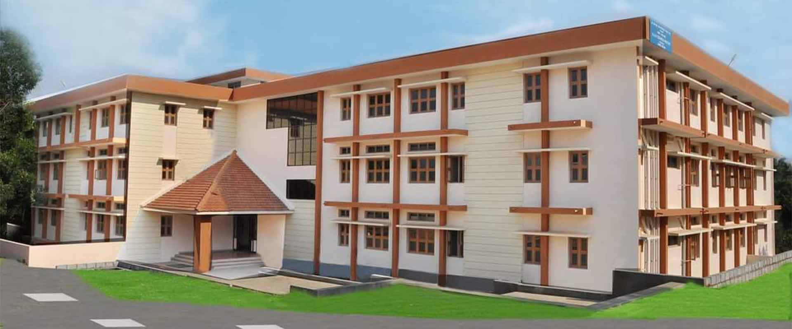

SDM Polytechnic was established in the year 2008 and is managed by SDM Educational Society – Ujire. The institution offers 3 years 6 Semester Diploma courses in the disciplines of Civil Engineering, Computer Science, Electronics & Communication Engineering and Mechanical Engineering. Since its establishment the management has taken huge strides towards enhancing excellence in all spheres of education. We are consistently exerting efforts to develop quality of education including appropriate attitude, behavior, technical and non- technical competencies. Constant upgrading of the facilities from lab to library is made. We have a team of highly qualified, dedicated and distinguished faculty. Ample opportunities are being provided to the students to take part in curricular, co-curricular and sports activities.